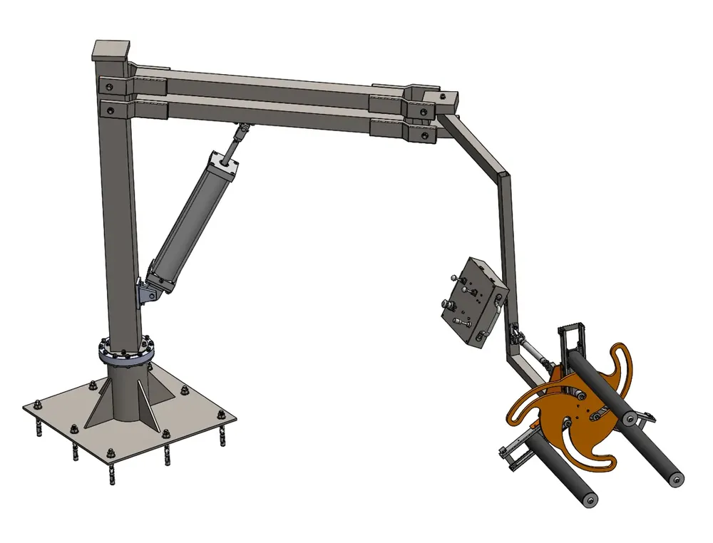
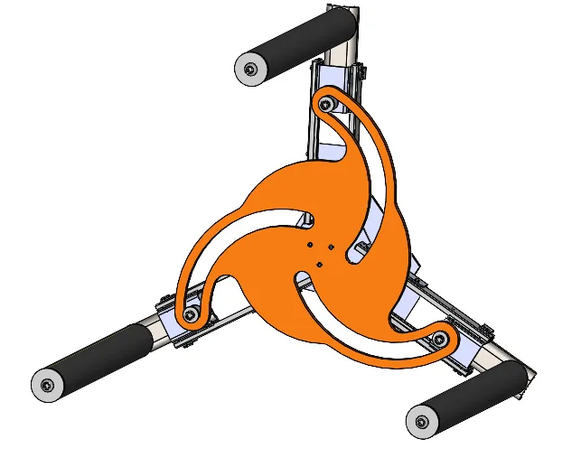
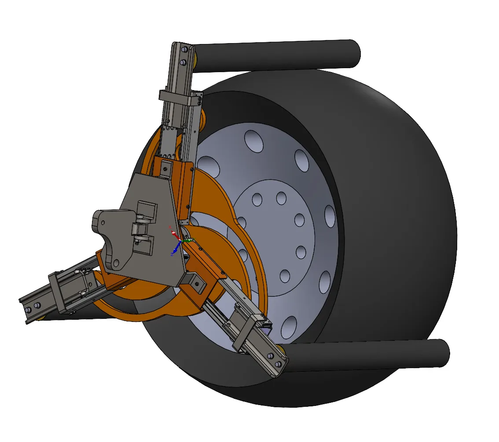
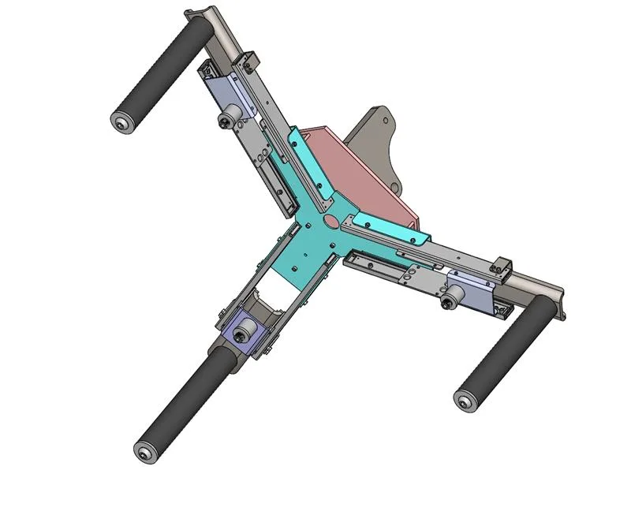
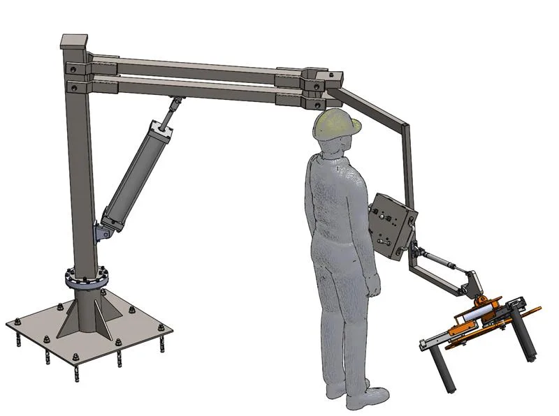
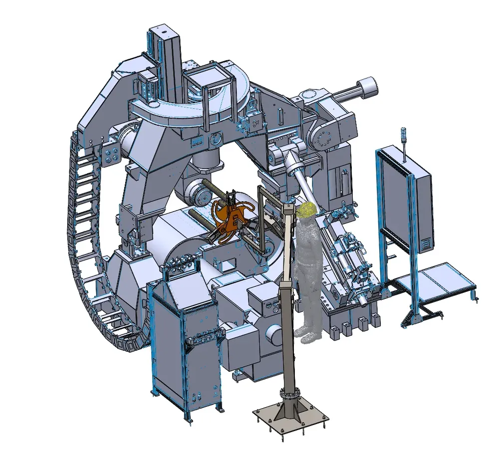
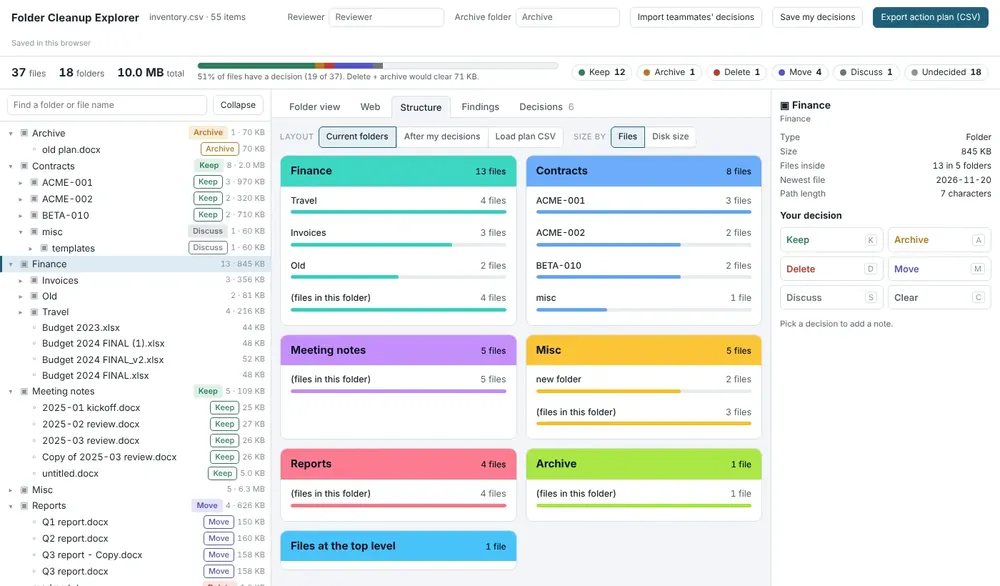

File no. CA-26-01Subject profileSubject: C. AccadDistribution: public
Cleared for release22 Nov 2026
File 01 · subject · Ottawa, Ontario
Engineer in defence procurement, building the dashboards I wish I had.
Biomedical Mechanical Engineering, University of Ottawa, 2026. Procurement officer at National Defence. On the side I build analytics tools, hardware and CAD, and I co-founded an engineering media company.
Now
Procurement officer at National Defence, Ottawa.
Building
A modular thrust vector propeller on INAV, a double inverted pendulum balanced by an ESP32 running an open-source Isaac Lab model, JellyNews (a Jellyfin companion app) and a Roku TV home dashboard.
Writing
A Substack newsletter, in planning.
Findings · results at work
10%off yearly maintenance, repair and overhaul costs by qualifying replacement sensorsDND, 2026
2 weeksoff procurement wait times with Outlook VBA and Power AutomateDND, 2026
10capital equipment programs specified, $100K to $2M eachDND, 2026
12 hoursoff deployment wait times with Python automationISC, 2023
File no. CA-26-02CAD exhibitsSubject: C. AccadDistribution: public
Cleared for release3 assemblies
File 02 · exhibit · CAD assembly
An F1-style go kart, drawn by 3D ellipses
Interactive 3DFrame designed by meSTEP AP214
F1-style go kart model. I designed the frame and assembled all digitally available components intended for track use. Design features: front and rear push-rod suspension, a rear differential, and a Suzuki GSX 1100 engine.
Press Start engine: the wheels and sprocket turn, and the exhaust puffs out small Fourier epicycles, each a chain of three spinning circles drawing its own curl of smoke.
A mill engine, drawn by 3D ellipses
Interactive 3DExported 2020STEP AP214
Small reciprocating mill engine designed in Autodesk. A single cylinder with a separate valve cylinder and port block. A trunk guide in three sub-sections keeps the piston rod running straight. The linkage and drive train are a con rod, eccentric strap, flywheel and drive pulley, on a base frame with a bearing and a top block.
Press Run the engine: the crank turns the flywheel and pulley, the con rod drives the piston and crosshead, and the eccentric strap works the piston valve. Steam leaves the valve exhaust as Fourier puffs.
The capstone tire gripper, drawn by 3D ellipses
Interactive 3DDesigned by meSolidWorks · STEP AP214
The three-prong rotary cam-follower gripper from my capstone tire handler (File 04). The orange cam plate turns on the actuator shaft; a bronze bushing on each prong carriage rides in one of its three curved slots, so turning the plate drives all three carriages along their linear rails at once.
Press Work the gripper: the plate turns about 63°, and the slot geometry pulls each prong in by 189 mm, then lets it back out. The stroke here is measured from the plate itself, not keyframed by hand.
Measurements
165parts in the assembly
358solid bodies
73,196faces in the source model
251assembly placements
269 MBSTEP file, simplified here to about 175,000 triangles
480ellipses in the Fourier trace
Measurements
95parts in the assembly
108solid bodies
4,837faces in the source model
22,934edges in the source model
16 MBSTEP file, simplified here to about 67,000 triangles
480ellipses in the Fourier trace
Measurements
248solid bodies, test tires removed
3prongs on one cam plate
189 mmprong stroke over about 63° of cam rotation
653 mmprong length: widest tire plus 8 in
115 MBSTEP file, simplified here to about 83,000 triangles
480ellipses in the Fourier trace
How it is drawn
Read the STEP file with a CAD kernel and pull out the longest edges of the assembly.
Join them into one closed path in 3D, with straight bridges between separate edges.
Take a Fourier transform of x, y and z. Each harmonic becomes an ellipse turning in 3D space.
Chain the 480 strongest harmonics tip to tail. They hold over 99.8% of the path's energy.
Fade in the solid once the line closes, shaded part by part from a simplified mesh.
Make your own
The tool behind this exhibit is open source. Give it a STEP file and it writes a page like this one, with the Fourier equation available to read or export.
drawing New.STEP · 480 ellipses · 99.9% energy · t = 0.000drag to orbit
File no. CA-26-03Bench buildsSubject: C. AccadDistribution: public
In progressdo not file
File 03 · bench builds · in progress
Thrust vector propeller, sketched to scale.
A propeller on a two-axis gimbal. Two servos push the ring through rods, tilting the motor up to 22° in any direction so the thrust can be steered. It flies on a Matek F405-WMN flight controller running INAV.
tilting ringservo Aservo B3 blade prop, ⌀ 92
tilt 0.0°
heading none
servo A 0.0°
servo B 0.0°
thrust 0%
drag the prop to aim it · drag the paper to turn
Fig. 3 · Thrust vector gimbal · printed mast, ring and base; motor, propeller and servos drawn as stand-ins
How the vector is steered
The ring sits on a ball joint at the top of a fixed mast, so it can tilt any way.
Two servos sit in cradles in the base at 90° to each other. Each drives one arm of the ring through a pushrod.
Each servo angle is solved so its pushrod keeps a fixed length while the ring tilts; the readout shows both.
Tilt is capped at 22°, the mechanical limit of the joint.
Double inverted pendulum, keeping its balance.
Two short arms balanced upright on a cart that runs along a rail. Quadrature encoders read both arm angles, and an ESP32 drives responsive DC and brushless motors. It runs an open-source control model trained in NVIDIA Isaac Lab by NRdrgz; I build the hardware and integration.
Fig. 4 · Simulated like the real build: only the cart pushes. Point masses of 0.4 and 0.25 kg on arms of 0.20 and 0.16 m, a 0.6 kg cart, gravity, friction and rubber end stops, integrated with RK4 at 1 kHz. A linear-quadratic regulator (LQR) is the classical stand-in for the Isaac Lab model. After a fall, the swing-up is a trajectory optimised offline (1.7 s, under 18 N, 24 cm of rail), tracked with time-varying LQR gains.
Try this
Drag the tip sideways a little and let go. The cart darts under it and the arms settle.
Click the rail to move the cart. Watch it first lean the wrong way to get going, a classic quirk of balancing.
Tap the tip or send a gust and read the force trace.
Pull hard, or switch the controller off, and it falls. Past about 50° the balance controller can’t save it, so a second controller takes over: it lets the arms settle, then pumps the cart to swing both arms back up and hands over at the top.
File no. CA-26-04Case fileSubject: C. AccadDistribution: public
DeliveredApril 2026
File 04 · case file · uOttawa capstone, April 2026
An operator-assist tire handler for a tire test lab.
Industry sponsoredTeam of fiveI designed the gripperSolidWorks · MATLAB
MTS loads test tires onto its Flat-Trac® machines by hand, which is slow and hard on the people doing it. Our team designed a floor-mounted handler that picks a tire up off the floor, turns it to face the machine and holds it on the hub while the operator bolts it on.
Requirements
91 kgheaviest tire it must lift
450 to 950 mmtire diameters, 100 to 450 mm wide
< 2 mintarget time to load a tire
2design factor on every structural member
IP67sealed against dust and water, floor-mounted only
8 inclearance kept behind the tire for hub bolts
No hydraulics allowed, nothing may enter the test machine's motion envelope, and it has to stay cheap.
How it moves
Swing: the base column sits on a turntable bearing, so the whole arm rotates left and right.
Lift: a pneumatic cylinder drives two parallel diagonal arms, keeping the head level as it rises.
Reach: the first arm pivots on the U-bracket for sideways adjustment.
Tilt: a second cylinder turns the gripper from facing the floor to facing the machine.
Clock: nylon sleeves on the prongs let the operator spin the tire to line up the bolt holes.
The gripper (my part)
A three-prong rotary cam-follower. A Parker RA20 rotary actuator turns an orange cam plate; three curved slots in the plate push the prong carriages along linear rails, so one rotation opens or closes all three prongs together around the tire bead. The rails mount to the Spyder Mount, a custom sheet-metal bracket with three arms, which also carries the tilt mount. Bushings at the cam followers are bolted on, so wear means swapping a bushing, not the cam plate.
Read the full case file: optimization, controls, a design-review lesson
Optimization
A MATLAB GUI takes the tire's mass, width and diameter, sizes the gripper first, then passes those loads down the frame member by member: arms, columns, U-bracket. Shear, bending and buckling checks hold a design factor of 2 throughout.
8 to 11.5 mmbase prong bolt diameter
50.8 to 73.8 mmprong shaft diameter
303 to 653 mmprong length: tire width plus 8 in
151 to 178.5 mmbase column outer diameter
Operator controls
A sealed box on the arm with three pneumatic valves: two 5/3 valves, so lift and grip can stop mid-stroke, and a 5/2 valve for the tilt, which only needs fully in or fully out. A 3/2 emergency stop sits in series and dumps the air supply, and check valves hold each cylinder if a line breaks.
A design-review lesson
For the ethics study we asked a large language model to improve the cam plate. It suggested thickening the plate, without seeing the loads. The plate actually fails by pin shear and slot bearing stress, which thickness does not fix, and the extra mass would have overloaded the actuator and forced injection moulding instead of water-jet cutting. We rejected the change, documented why, and re-checked every cam stress against the factor of 2.

The complete handler.

Gripper open: prongs out at the end of the cam slots.

Holding the largest tire, hub clear.

The Spyder Mount carrying the rails.

Pick-up position, 6 ft operator for scale.

Placed in the test cell.
File no. CA-26-05Record of serviceSubject: C. AccadDistribution: public
On record41 months
File 05 · record of service · 41 months federal, six placements
From federal co-op to procurement officer.
Most of my degree was spent inside the federal government through co-op. That taught me how large equipment programs are bought, funded and reported on, and where the data gets stuck. I build the tool when the spreadsheet stops being enough.
Aug 2026 to now
Procurement Officer
Department of National Defence
Keeps procurement compliant with government logistics standards on a radar program team.
Wrote the standard operating procedure for spending authorization forms, with templates for hospitality, travel and procurement.
Built Python and VBA tools that generate spending authorization forms and service-level agreements, and a file retention system.
Jan to Jun 2026
Technical Authority, co-op
DND, Land Equipment Program Management
Wrote specifications and engineering requirements for 10 capital equipment programs valued from $100,000 to $2M.
Saved 10% on yearly maintenance, repair and overhaul costs by qualifying replacement thermistor sensors.
Cut procurement wait times by 2 weeks with Outlook VBA and Power Automate workflows.
May 2025 to Jan 2026
Data Analyst, co-op
Canadian Armed Forces
Maintained Azure DevOps and AWS pipelines for aerospace test data, with anomaly detection for spikes and failing sensors.
Reported program status through Power BI dashboards, MS Project tracking and briefings for senior staff.
May 2024 to May 2025
Risk Analyst, co-op
Transport Canada
Modelled axle and wheel fatigue life with finite element analysis to AAR M-101, M-107 and M-208.
Ran hazard assessments for hydrogen and crude oil transport: 4 failure modes, dispersion envelopes from 20 m to 300 m.
Jan to May 2024
Project Manager, co-op
Employment and Social Development Canada
Designed and ran a SharePoint records system that improved document control and traceability.
May 2023 to Jan 2024
IT Automation Specialist, co-op
Indigenous Services Canada
Python automation cut deployment wait times by 12 hours.
Founded the Excel Clinic, cutting technical inquiry response time from 6.2 to 3.0 days.
May to Sep 2022
Biomedical Engineering, co-op
The Ottawa Hospital
Built a Power BI prioritization model that in one case cut incubator maintenance wait time by 30%.
May 2022 to Jul 2024
Co-Founder and Chief Designer
EntroCAD
SolidWorks-based technical content, 3D models and manufacturing drawings for clients including Natural Resources Canada and GoEngineer.
2020 to 2026
BASc, Biomedical Mechanical Engineering
University of Ottawa
Industry-sponsored capstone: an ergonomic tire-handling system, analysed to a safety factor of 2 or greater, delivered as a working prototype.
File no. CA-26-06CapabilitiesSubject: C. AccadDistribution: public
On record
File 06 · capabilities
Engineering, procurement and the software in between.
Engineering
SolidWorks and Simulation FEAThermal and flow simulationGD&T and detailed drawingsCATIACreoAutoCADMATLABVibration analysis
Shop
MIG weldingLathe machining3D printingLaser cuttingElectronics and wiring
Procurement
RFQs and purchase ordersSpecifications and requirementsSAPOracle EBSDRMISDocument control
Data and automation
PythonSQLVBAPower AutomatePower BIRustJavaScript and ReactC and C++Azure DevOpsAWS
Project support
MS ProjectMicrosoft PlannerSharePointBriefings and reports
File no. CA-26-07Index of workSubject: C. AccadDistribution: public
Index14 entries
File 07 · index of work ·
Every project, one index.
Select an entry to read its summary. Entries with a full case file link to it.
File no. CA-26-08Case fileSubject: C. AccadDistribution: public
Cleared for releaseMIT licence
File 08 · case file · open source
File Cleanup Tool
MIT licensedPython 3.9+Standard library onlyFully offline
Review a messy folder visually with your team, agree on a cleaner structure, and copy it into a new folder. Your original files are never moved, renamed or deleted.
problem
Built for shared document libraries such as SharePoint and OneDrive sync folders and network drives, where several people need to agree on where things should go before anything changes.
measurements
5commands: demo, scan, explore, suggest, apply
34tests, including a real browser test
0third-party packages, no network, no accounts
0changes ever made to the original folder
Read the full case file: workflow, components, safeguards, tests
workflow
Scan and explore. One command builds a single offline HTML page that shows the folders as a tree, a bubble map and cards, with duplicate and version flags.
Decide. Each reviewer marks any folder or file Keep, Archive, Delete, Move to a new location, or Discuss, then saves their decisions.
Merge. The lead imports everyone's files. The page shows agreement and conflicts, and exports the team result: majority wins, ties become Discuss.
Draft from rules. A small JSON file describing the structure you want produces a first-draft plan without clicking through thousands of files.
Preview, then copy. A dry run reports how many files fall under each action. Adding a flag copies the approved layout into a new folder.
components
Offline explorer pageBubble mapFive decisions per itemTeam mergeRules fileSafe copy enginePython library
safeguards
Dry run by default. Nothing is copied until you add the go flag.
The destination cannot be inside the source folder.
A destination that looks like OneDrive or SharePoint is refused unless you pass an explicit override, because the copies would upload.
Files are copied, never moved. Sizes are verified, every result is logged, and a stopped run can resume.
Two files that land on the same name both survive, with (2) or (3) added.
Windows paths over 260 characters are handled. Duplicate detection uses names and sizes only.
tests
Unit tests cover the scanner, plan reader, rules and copy engine. A browser test, run when Playwright is installed, makes decisions in the real explorer page, exports the plan and copies with apply.
Folder view with decisions.Web view: bubbles sized by file count.

Structure view: the same folders as cards.
File no. CA-26-09Case fileSubject: C. AccadDistribution: public
Cleared for releaselive board
File 09 · case file · simulation
Senate Situation Board
Live on GitHub PagesPythonReact, Vite and three.js5 policy sectors
A Senate policy simulation that projects how the 100 senators are likely to vote, and which measures could pass, across the 120th to 122nd Congresses. Foreign policy was the first module. Healthcare, energy, banking and AI and tech plug into the same core engine.
goal
One engine for scoring senators, gating measures through committees and floor rules, and running elections forward, where a new policy area is one file plus an overrides sheet.
measurements
5policy sectors on one shared engine
16scored policy dimensions
4,400+lines of Python in the engine and scripts
116offline tests, no network or keys needed
Read the full case file: pipeline, components, stated limits
pipeline
Build the roster. Senators, IDs, caucus, class and seniority come from congress-legislators, with Voteview DW-NOMINATE history and Congress.gov as a cross-check. A validation gate fails the build if the roster is wrong.
Score each senator. Every dimension runs from -2 to +2 with an uncertainty. Scores come from a formula on DW-NOMINATE, from the caucus median when there is no record, or from a manual override that cites roll calls.
Calibrate. A pooled probit per dimension is fitted to Senate roll calls. Near-identical votes are down-weighted, each senator's own deviation is estimated, and held-out accuracy is reported.
Simulate a measure. A Monte Carlo run sends it through simple majority, cloture, two-thirds votes, vetoes and overrides, under both a Republican and a Democratic White House.
Project forward. The 2028 and 2030 elections, retirements and committee re-projections are simulated, and every preset measure is re-run in each Congress.
Publish. Results export to JSON for a web board with a 3D chamber, a roll-call mode, a 2027 to 2032 timeline and a hearings schedule, deployed by GitHub Actions.
components
Roster and validationDW-NOMINATE scoresProbit calibrationMonte Carlo votesCommittee projectionElection modelPAC money testHearings schedule
limits, stated on the site
The output is a projection from a model, and committee assignments are projections until the conferences decide.
Dimensions without usable roll calls keep a starting formula with wide uncertainty, and their measures are labelled illustrative.
AI and tech has no fitted dimension, because the one AI roll call passed 99 to 1, so it relies on sponsorship-based overrides.
PAC donations are tested against votes first and only used where they carry information the ideology mapping misses.
Seeded overrides are flagged unverified until each is checked against the cited roll call.